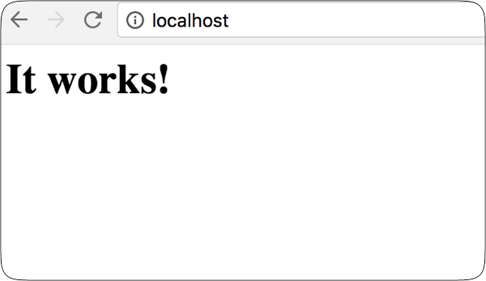
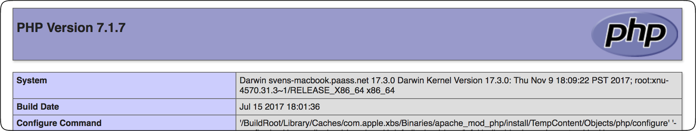

Um einen Webserver mit PHP unter macOS laufen zu lassen benötigt man kein extra Paket mehr, da sowohl der Webserver, als auch PHP in macOS vorhanden sind.
Bei macOS High Sierra (10.13.2) wird der Apache Webserver in der Version 2.4.28 und PHP in der Version 7.1.7 mitgeliefert.
Also richten wir uns eine lokale Umgebung ein, die das Verzeichnis Sites im Verzeichnis unseres Hauptbenutzers freigibt.
Apache Webserver aktivieren
Man öffnet das Terminal und startet den Webserver mit folgendem Befehl.
sudo apachectl startJetzt kann man im Browser seiner Wahl prüfen, ob der Webserver funktioniert, indem man localhost als Adresse eingibt.

PHP aktivieren
Um PHP zu aktiviern, muss die apache-Konfiguration angepasst werden. Dazu muss die Datei /etc/apache2/httpd.conf angepasst werden.
- Man öffnet das Terminal
- Mit dem Befehl sudo nano /etc/apache2/httpd.conf wird die Datei im Editor als Systemadministrator geöffnet.
- Die Tastenkombination Ctrl + W dient zur Suche im nano Editor.
- Man sucht nach php und der Editor springt zu folgender Zeile:
#LoadModule php7_module libexec/apache2/libphp7.so- Das PHP Modul muss aktiviert werden, indem das # am Anfang der Zeile entfernt wird.
- Möchte man auch andere Module aktivieren, funktioniert das nach dem gleichen Prinzip. Ich empfehle noch das rewrite_module, da es von vielen CMS Systemen verwendet wird, um die URLs umzuschreiben.
- Mittels Ctrl + O wird die Datei gespeichert und der Editor mit Ctrl + X beendet.
Nach einem Neustart des Webservers mittels sudo apachectl restart ist php aktiviert.
Webseiten Verzeichnis erstellen
Im Finder öffnet man das Benutzerverzeichnis (Im Menü unter Gehe zu > Benutzerordner bzw. mit der Tastenkombination ⇧ + ⌘ + H).
Dort erstellt man einen Ordner mit dem Namen Sites. Dieser Ordner erhält automatisch das Safari Logo.
Zum testen wird eine Datei index.php mit folgendem Inhalt in dem Ordner erstellt.
index.php:
<?php phpinfo(); ?>Damit dieser Ordner automatisch verwendet wird, editiert man erneut die Apache-Konfiguration wie oben beschrieben im Terminal.
Man such nach DocumentRoot und ändert die folgenden beiden Zeilen
DocumentRoot "/Library/WebServer/Documents"
<Directory "/Library/WebServer/Documents">in
DocumentRoot "/Users/svenpaass/Sites"
<Directory "/Users/svenpaass/Sites">wobei natürlich der eigene Benutzername verwendet wird.
Apache Benutzer ändern
Damit es keine Probleme mit Berechtigungen gibt, kann man den Apache Webserver unter der eigenen User-Kennung laufen lassen. Damit laufen auch die PHP Skripte mit der eigenen Kennung.
Auf einer lokalen Maschine, die von einer Person verwendet wird, ist das kein großes Problem. Produktiv würde ich allerdings mit suexec und fcgi arbeiten, damit php einen anderen Benutzer verwendet als der Webserver.
/etc/apache2/httpd.conf:
User svenpaass
Group staff.htaccess Dateien erlauben
Damit evtl. vorhandene .htaccess Dateien ausgewertet werden, sucht man unter dem Directory Eintrag die Zeile AllowOverride None und ändert sie in AllowOverride All.
Nach dem Neustart des Webservers sind die Änderungen aktiv und man bekommt die PHP Informationsseite angezeigt, wenn man http://localhost aufruft.

Der Webserver wird beim Neustart automatisch gestartet.
Ich verwende den Webserver um eine lokale Version meiner Webseite inkl. Blog zu betreiben. Warum? Die verwendete Blog-Software GRAV basiert auf Markdown-Dateien. Diese werden in einem git-Repository versioniert. Sobald ich die Änderungen in mein privates gitlab-Repository pushe, werden die Änderungen mittels des Grav git-sync Plugins automatisch live geschaltet.
Kommentar hinzufügen
Kommentare
|
Danke - gute Arbeit!
geschrieben am Sun, 24 Nov 2019 19:59:59 von Maximilian Bundscherer |
|
Hallo Sven, danke für diese Anleitung. Sie hat mir
gerade unter Mojave sehr geholfen!! Das war in 3 Minuten erledigt.
geschrieben am Fri, 28 Jun 2019 08:20:21 von JoPhi |
|
Hallo! Tolles Beispiel :) Kann man damit auch MySQL Datenbanken lokal laufen lassen bzw. einbinden?
geschrieben am Thu, 09 May 2019 09:51:53 von Joachim |
|
Perfekte Anleitung, herzlichen Dank dafür! Wenn ich
diese Seite vorher gefunden hätte, dann wäre mir ein ganzer Tag
"Rumgefrikkel" mit XAMPP etc. erspart geblieben.
geschrieben am Tue, 05 Feb 2019 11:50:58 von Guenther |
|
Ich habe vergessen hinzuzufügen, das nach der
Änderung der Apache Konfiguration der Webserver neu gestartet werden
muss. Dazu führt man "sudo apachectl restart" aus.
geschrieben am Thu, 24 Jan 2019 07:13:18 von Sven Paaß |
|
Hallo. Ich habe die Anleitung bis einschließlich
"DocumentRoot" umgesetzt. Doch wenn ich localhost aufrufe erscheint "It
works!".
Können Sie mir hier weiterhelfen?
geschrieben am Wed, 23 Jan 2019 21:01:34 von Thomas |